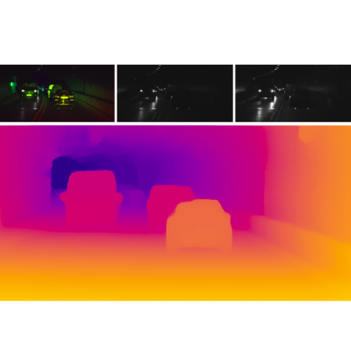

Research
I'm interested in computer vision, machine learning, optimization, and complex adaptive systems.
|
|
|
Gated Fields: Learning Scene Reconstruction from Gated Videos
Andrea Ramazzina*, Stefanie Walz*, Mario Bijelic, Pragyan Dahal, Felix Heide
CVPR, 2024
Project Page /
Code /
PDF
We propose a neural rendering approach that seamlessly incorporates time-gated capture and illumination. Our method exploits the intrinsic depth cues in the gated videos, achieving precise and dense geometry reconstruction irrespective of ambient illumination conditions.
|
|
|
Learning Complete Human Neural Representations from Limited Viewpoints
Alessandro Sanvito*, Andrea Ramazzina*, Stefanie Walz, Mario Bijelic, Felix Heide
IEEE IV, 2024
ArXiv
We introduce HINT, a novel method able to learn a robust representation of a human captured only in a limited range of views augmenting existing sequences with novel views of the person and poses.
|
|
|
Radar Fields: Frequency-Space Neural Scene Representations for FMCW Radar
David Borts, Erich Liang, Tim Brödermann, Andrea Ramazzina, Stefanie Walz, Edoardo Palladin, David Bruggemann, Christos Sakaridis, Luc Van Gool, Mario Bijelic, Felix Heide
SIGGRAPH, 2024
Project Page /
ACM /
Code /
ArXiv
We introduce Radar Fields - a neural scene reconstruction method designed for active radar imagers. Our approach unites an explicit, physics-informed sensor model with an implicit neural geometry and reflectance model to directly synthesize raw radar measurements and extract scene occupancy.
|
|
|
ScatterNeRF: Seeing Through Fog with Physically-Based Inverse Neural Rendering
Andrea Ramazzina, Mario Bijelic, Stefanie Walz, Alessandro Sanvito, Dominik Scheuble, Felix Heide
ICCV, 2023
Project Page /
Code /
ArXiv
We learn a foggy scene from a single video, disjointly representing scattering volume and scene objects through physics-inspired losses. This allows for accurate rendering of novel views with full control over the scattering volume, as well as a more accurate estimation of the 3D scene.
|
|

|
Gated Stereo: Joint Depth Estimation from Gated and Wide-Baseline Active Stereo Cues
Stefanie Walz,
Mario Bijelic,
Andrea Ramazzina,
Amanpreet Walia,
Fahim Mannan,
Felix Heide
CVPR, 2023 (Highlight)
Project Page /
Code /
ArXiv
We propose Gated Stereo, a high-resolution and long-range depth estimation technique that operates on active gated stereo images.
|
|
|
Single scattering models for radiative transfer of isotropic and cone-shaped light sources in fog
Simeon Geiger,
André Liemert,
Dominik Reitzle,
Mario Bijelic,
Andrea Ramazzina,
Werner Ritter,
Felix Heide,
Alwin Kienle
Optics Express, 2022
Paper
We present an improved solution to calculate the so called air-light integral that can be evaluated fast and robustly for an isotropic point source in homogeneous media.
|
Previously Supervised Students
|
|
{kind=link}